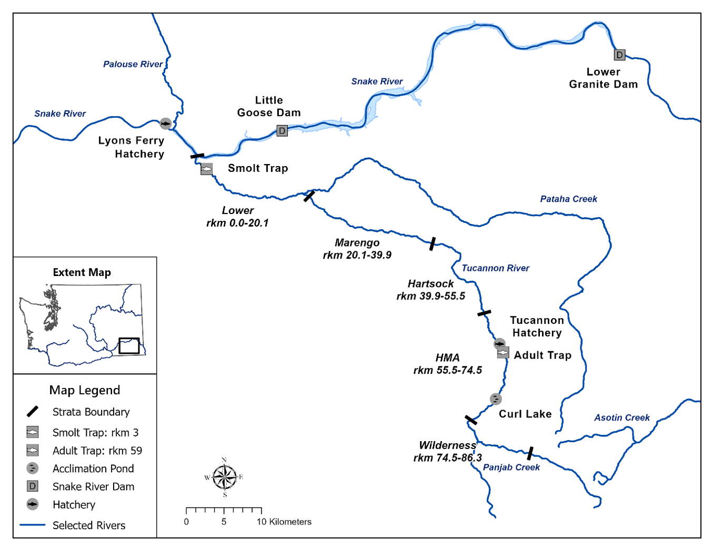
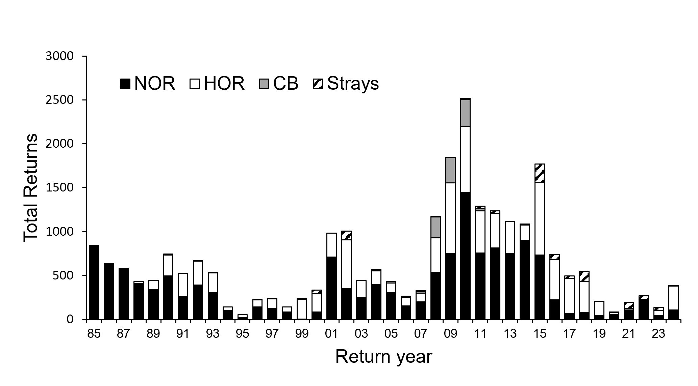
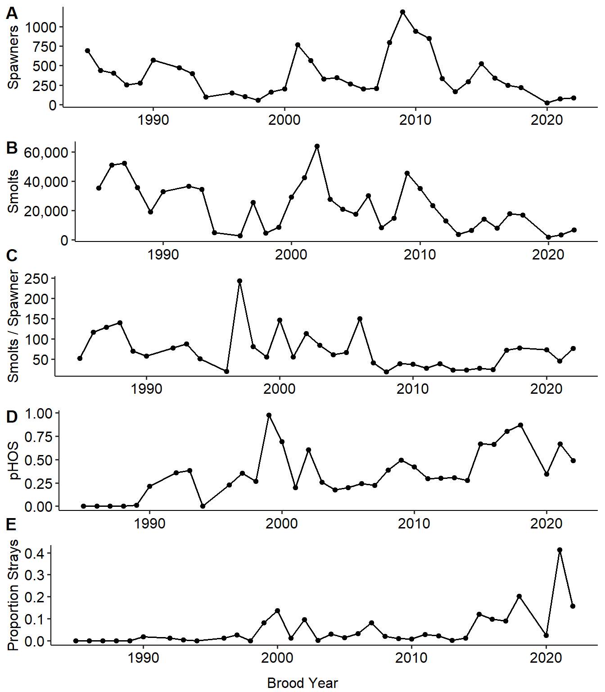
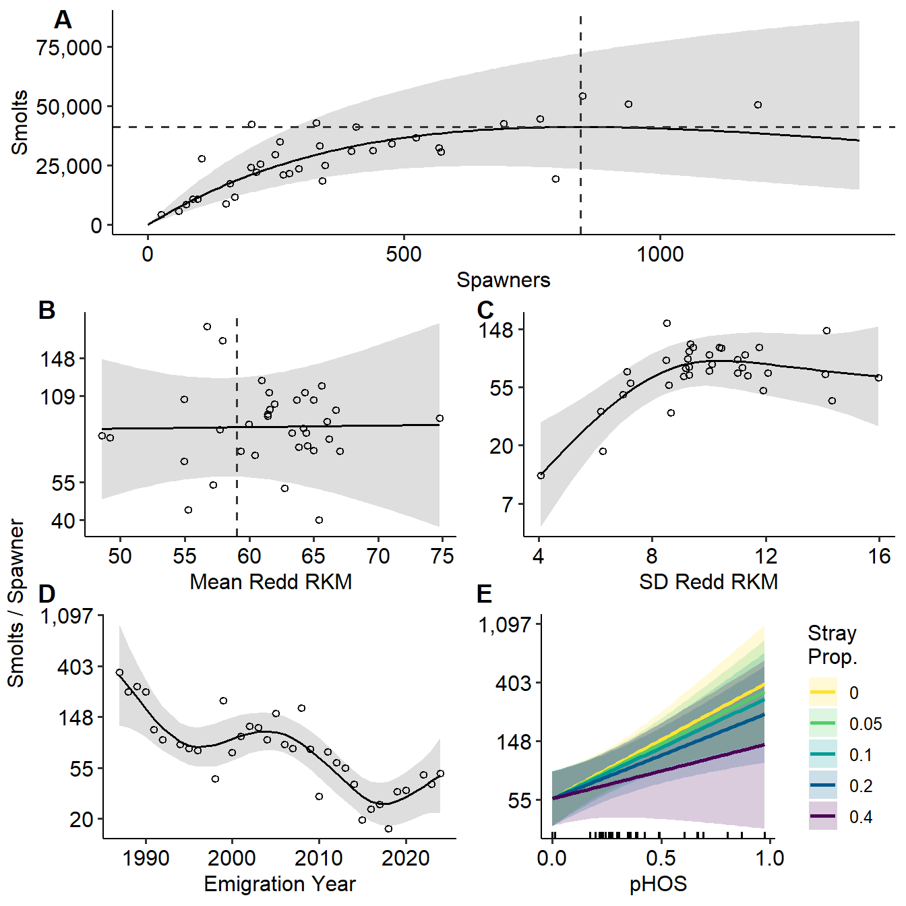
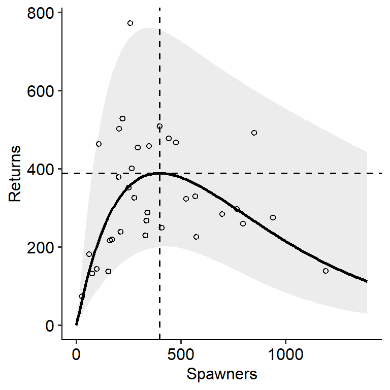
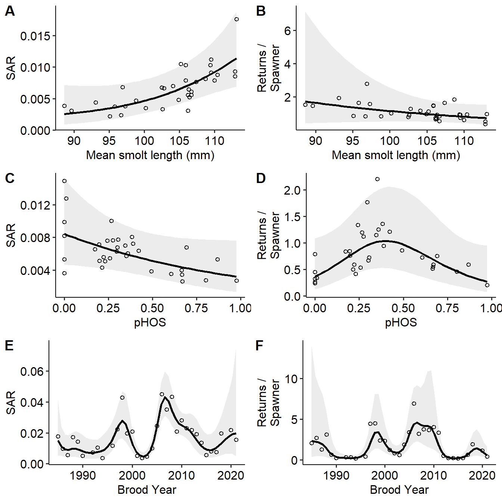

Examination of Selected Factors Affecting Survival and Productivity of Tucannon River Spring Chinook Salmon
Introduction
The goals of this work are to:
- Examine several covariates to determine if they help explain fluctuations in Tucannon Spring Chinook productivity as measured in smolts/spawner. These possible covariates include:
- the total number of spawners each brood year,
- pHOS,
- proportion of strays,
- the mean river kilometer of the redd distribution that year,
- the standard deviation of the redd river kilometer and
- the year of smolt emigration.
- Determine if smolt size (e.g. mean fork length) or pHOS has an impact on various recruitment metrics such as:
- total (ages 3-5) SAR,
- returns per spawner,
while accounting for possible effects of brood year.
Methods
Study Population
Juvenile Emigrant Abundance
Data Analysis
Covariates
We investigated the influence of hatchery-origin spawners on smolts-per-spawner by using the proportion of hatchery origin spawners (pHOS) as a covariate. In addition, we examined the potential effect of out-of-basin hatchery strays to explore the possibility that out-of-basin hatchery fish could have a different impact on smolts-per-spawner than the integrated hatchery fish of the Tucannon program. Because pHOS and the proportion of out-of-basin hatchery strays are correlated (\(r\) = 0.63), instead of using both covariates independently, we included pHOS as a covariate, and the interaction between pHOS and the proportion of strays. This interaction represents the difference between Tucannon hatchery origin spawners and out-of-basin hatchery origin spawners.
We also evaluated whether local rearing habitat conditions or infrastructure, inferred from spawning distribution, influenced smolts-per-spawner. The hatchery weir, located at rkm 59, may impact adult passage through delays, etc. (Wilson and Buehrens 2024). Additionally, the habitat in the upper watershed is more pristine while the habitat in the lower watershed is more heavily impacted. Because many potential habitat-related metrics (e.g., proportion of redds above/below the weir, proportion in the upper watershed, proportion in the lower watershed, etc.) are highly correlated, we chose to examine the mean rkm of the redds each year as a singular covariate to summarize the spatial distribution of spawning. We hypothesize that the higher mean redd rkm values, reflecting more spawning in higher quality upstream habitats, would be associated with greater smolts-per-spawner. We also included the standard deviation of the redd rkms, as a measure of how concentrated (small value) or dispersed (high value) the redds were within the watershed in a given year.
Statistical Models
To examine the effects of selected covariates on smolts-per-spawner, we fit a generalized additive model (GAM), using the log of smolts-per-spawner as the response variable. We included spline terms for mean rkm of redds, standard deviation of rkm per redds, pHOS, and emigration year. The inclusion of emigration year helps to control for long-term trends and effects that are not accounted for by the other covariates. We used a GAM to accommodate potential non-linear relationships between covariates and productivity. In addition to the spline terms, we included two fixed effects: the number of spawners and an interaction between pHOS and the proportion of out-of-basin strays. Including spawners as a fixed term assumes a linear relationship between the log of smolts-per-spawner and the total number of spawners, consistent with a linearized Ricker model and the understanding that every ecological system is subject to some carrying capacity constraints (Chapman and Byron 2018). This approach also allowed us to allocate more degrees of freedom to the splines of the other covariates.
We also examined the effects of mean smolt length and pHOS on productivity by fitting two more GAMs using SAR and R/S as the dependent variables. We included spline terms for mean smolt length in each brood year, pHOS, and brood year. The SAR model was fit using a quasi-binomial GAM with a logit link to account for the proportional nature of the response, while the R/S model was fit using a GAM with a log link. In both models, spawner abundance was included as a fixed linear parametric term, consistent with a linearized Ricker model structure.
Our goal with these analyses is to examine general patterns of how a few key covariates influence population productivity, rather than to formally test hypotheses or predict future productivity. The dataset has 35 data points; therefore, we limited the number of knots in all splines to a maximum of four for all covariates except emigration or brood year, which we allowed to be larger as that term was meant to capture any other processes and long-term trends. We fit a spline for year, rather than treating year as a random effect, because we expected the effects to be auto-correlated and to capture any long-term trend. The models were fit using R statistical software version 4.3.2 (R Core Team 2023) with the mgcv package (Wood 2011), using restricted maximum likelihood methods. We checked the effective degrees of freedom in each model fit using the k.check( ) function to ensure against underfitting, while the use of penalized splines guarded against overfitting. Data and code to reproduce this analysis is available on a GitHub repository (https://github.com/dfw-wa/tuc-spchnk-productivity).
Results
Spring Chinook Salmon total escapement back to the Tucannon River prior to implementation of the hatchery program averaged 687 for the 1985-1987 return years (Figure 2). After the hatchery program was in place, escapement fluctuated greatly but averaged 448 for the 1988-2008 return years (Figure 2). Primarily due to improved ocean conditions, there was a large increase in escapement for the 2009-2015 return years, with an average return of 1,421 fish (Figure 2). The captive broodstock program provided a small, short-term demographic boost to the population, primarily during the 2008-2010 return years (Figure 2). Returns decreased after this period, dropping down to an average of 300 for the 2016-2024 return years (Figure 2). The proportion of strays from other hatchery programs increased from approximately 2015 to the present (Figure 2).
The number of smolts and spawners tracked each other closely over the time period (Figure 3). The number of smolts-per-spawner fluctuated over the years and averaged 93 for the 1985-2006 BYs (Figure 3). Smolts-per-spawner then declined to an average of 31 smolts-per-spawner for the 2007-2016 BYs before trending back up to an average of 55 smolts-per-spawner for the 2017-2022 BYs (Figure 3). The proportion of strays and pHOS increased over time as hatchery production ramped up and the number of natural adult returns decreased (Figure 3).
Smolts-per-Spawner
The GAM for smolts-per-spawner revealed evidence of density-dependent productivity, consistent with carrying capacity limitations, as indicated by a significant negative effect of total spawners on log-transformed smolts-per-spawner (estimate = -0.001, p = 0.005; Table 2, Figure 4). Although the mean redd rkm showed little effect, the smoothed spline of the standard deviation of redd rkm suggest that higher standard deviations (i.e., more dispersed redds) leads to higher predicted values of smolts-per-spawner (Figure 4). This spline was statistically significant (Table 3).
Higher levels of pHOS are associated with higher productivity, although when hatchery origin spawners are made up of a higher proportion of out-of-basin strays, that effect is dampened (Table 2, Figure 4). While the interaction between pHOS and the proportion of out-of-basin strays was not statistically significant (p = 0.289), the negative coefficient (estimate = -2.65, SE = 2.438) suggests a potential negative impact of out-of-basin strays relative to integrated hatchery spawners.
The estimated smolt capacity, based on the fitted Ricker curve (Figure 4 A) is 41,286 smolts, which occurs when there are 845 spawners in the system. Visual inspection of the model fit and covariate relationships in Figure 4 further illustrates these patterns and highlights the dominant influence of spawner abundance on smolts-per-spawner over the time series.
SAR and Returns/Spawner
The GAMs for R/S also show significant evidence of density-dependent effects on productivity, as indicated by the negative effect of spawners on total R/S as part of the linearized Ricker model (Table 4). This effect is consistent with carrying capacity limitations. The estimated maximum returns are 389 total (Age 3+) returns, which occur when there are 397 spawners (Figure 5).
The mean smolt length was statistically significant in the SAR model but not the R/S model (Table 5). The marginal effect plot illustrates that as mean smolt length increases, the predicted SAR also increases although the predicted R/S remains flat (Figure 6 A, B). On the other hand, pHOS shows a negative, but not statistically significant association with SAR, and a non-linear but not significant relationship with R/S (Table 5; Figure 6 C, D). The smoothed spline for brood year shows a few periods with higher SAR and R/S compared with other periods in the time series, which is likely related to favorable ocean conditions (Figure 6 E, F).
Diagnostic checks for all models indicated no evidence of underfitting due to overly restrictive spline specification. The summary statistics for each model, including the pseudo-R2 value and the percent of deviance explained by each model are provided in Table 6. All models had fairly high pseudo-\(R^2\) values (range of 0.61 – 0.88) and explained a large proportion of the variance (74-92%).
References
Chapman, E. J., and C. J. Byron. 2018. The flexible application of carrying capacity in ecology. Global Ecology and Conservation 13:e00365.
R Core Team. 2023. R: A language and environment for statistical computing. Manual, R Foundation for Statistical Computing, Vienna, Austria.
Wilson, J. T., and T. W. Buehrens. 2024. Weirs: An effective tool to reduce hatchery–wild interactions on the spawning grounds? North American Journal of Fisheries Management 44(1):21–38.
Wood, S. N. 2011. Fast Stable Restricted Maximum Likelihood and Marginal Likelihood Estimation of Semiparametric Generalized Linear Models. Journal of the Royal Statistical Society Series B: Statistical Methodology 73(1):3–36.
Figures





Tables
Strata | River kilometer* | Land Ownership / Usage | Habitat |
|---|---|---|---|
Lower | 0.0 - 20.1 | Private/Agriculture & Ranching | Poor (temperature limited) |
Marengo | 20.1 - 39.9 | Private/Agriculture & Ranching | Marginal (temperature limited) |
Hartsock | 39.9 - 55.5 | Private/Agriculture & Ranching | Fair to Good |
HMA | 55.5 - 74.5 | State & Federal/Recreational | Good to Excellent |
Wilderness | 74.5 - 86.3 | Federal/Recreation | Excellent |
*River kilometer descriptions: 0.0 - mouth at the Snake River; 20.1 - Territorial Rd.; 39.9 - Marengo bridge; 55.5 - HMA boundary fence; 74.5 - Panjab bridge; 86.3 - Rucherts Camp. | |||
Term | Estimate | SE | Statistic | P-value | Lower | Upper |
|---|---|---|---|---|---|---|
(Intercept) | 4.593 | 0.178 | 25.835 | 0.000 | 4.245 | 4.942 |
Spawners | -0.001 | 0.000 | -3.145 | 0.005 | -0.002 | -0.000 |
pHOS:Stray | -2.650 | 2.438 | -1.087 | 0.289 | -7.429 | 2.129 |
Term | Edf | Ref Df | Statistic | P-value |
|---|---|---|---|---|
s(mean rkm) | 1.000 | 1.000 | 0.003 | 0.956 |
s(SD rkm) | 2.601 | 2.876 | 6.610 | 0.004 |
s(pHOS) | 1.000 | 1.000 | 9.277 | 0.006 |
s(emigration year) | 5.153 | 6.436 | 5.530 | 0.001 |
Term | Estimate | SE | Statistic | P-value | Lower | Upper |
|---|---|---|---|---|---|---|
(Intercept) | 0.683 | 0.275 | 2.487 | 0.024 | 0.145 | 1.221 |
Spawners | -0.003 | 0.001 | -3.686 | 0.002 | -0.004 | -0.001 |
Model | Term | Edf | Ref Df | Statistic | P-value | Sig |
|---|---|---|---|---|---|---|
SAR | s(mean smolt length) | 1.322 | 1.530 | 4.185 | 0.024 | * |
SAR | s(pHOS) | 1.000 | 1.000 | 2.951 | 0.102 | N.S. |
SAR | s(brood year) | 11.525 | 13.757 | 7.048 | 0.000 | ** |
Returns / Spawner | s(mean smolt length) | 1.000 | 1.000 | 1.015 | 0.328 | N.S. |
Returns / Spawner | s(pHOS) | 2.370 | 2.675 | 2.743 | 0.059 | N.S. |
Returns / Spawner | s(brood year) | 11.745 | 14.052 | 6.254 | 0.000 | ** |
Model | R2 | Dev. Explained |
|---|---|---|
Smolts-per-spawner | 0.609 | 0.744 |
SAR | 0.876 | 0.922 |
Returns-per-spawner | 0.795 | 0.895 |